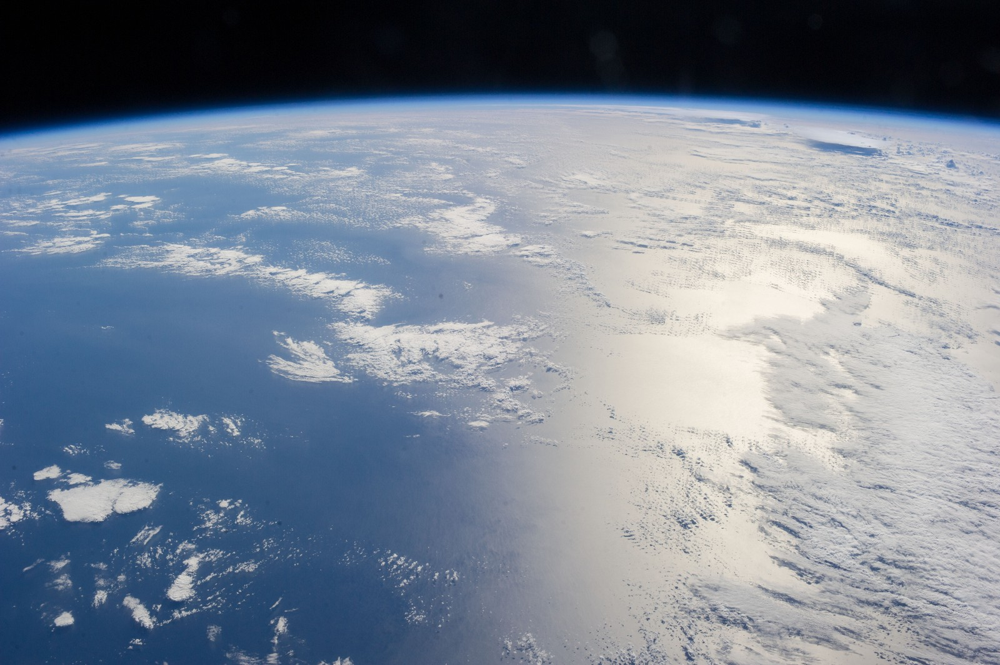
카르만 라인 체험
우주의 경계선인 고도 100km까지 올라 약 15분간 무중력을 경험하는 입문 상품입니다. 3일간의 사전 훈련을 거쳐 탑승합니다.
- 고도 100km 준궤도 비행
- 15분 무중력 체험
- 사전 훈련 3일
- 비행 기념 인증서 발급
1억 8천만 원 (1인 기준)
Kármán Line은 고도 100km의 경계선부터 달 궤도, 그 너머의 심우주까지 안내하는 민간 우주 여행사입니다. 충분한 훈련과 검증된 기체로 누구나 우주를 직접 마주할 수 있도록 돕습니다.
지금 예약하기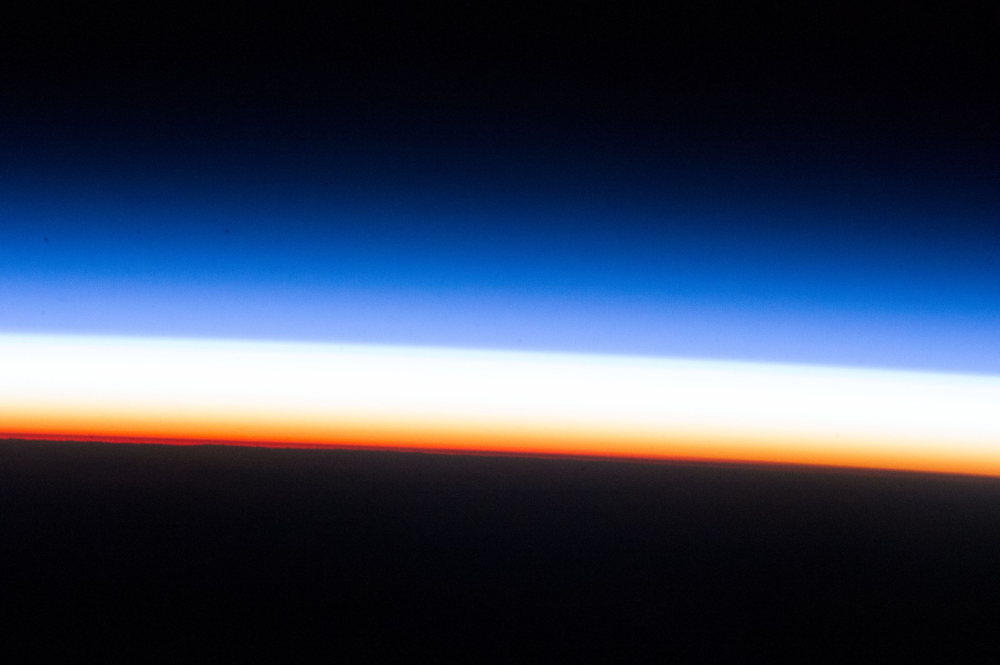
국제항공연맹(FAI)은 고도 100km를 대기권과 우주의 경계인 카르만 선으로 정의합니다. 우리는 이 보이지 않는 선을 넘는 경험이 특별한 소수의 전유물이 아니라 준비된 누구에게나 열린 여행이 되어야 한다고 믿습니다.
2021년 설립 이후 Kármán Line은 우주 비행 전문가, 의료진, 훈련 교관으로 구성된 팀과 함께 탑승객의 안전을 최우선 원칙으로 삼아 왔습니다. 모든 여정은 신청부터 귀환까지 하나의 프로그램으로 설계됩니다.
짧은 준궤도 비행부터 달 뒷면을 지나는 항해, 라그랑주점에서의 심우주 관측까지, 고도가 높아질수록 더 깊은 우주를 경험할 수 있는 네 가지 여정을 준비했습니다.
고도가 높아지는 순서대로 네 가지 상품을 소개합니다.

우주의 경계선인 고도 100km까지 올라 약 15분간 무중력을 경험하는 입문 상품입니다. 3일간의 사전 훈련을 거쳐 탑승합니다.
1억 8천만 원 (1인 기준)
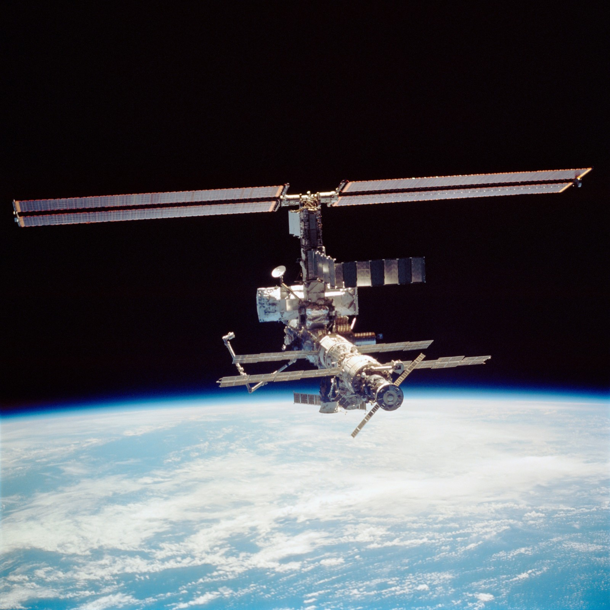
고도 400km 지구 궤도의 호텔 모듈에서 사흘간 머무릅니다. 하루에 열여섯 번의 일출과 일몰을 창밖으로 볼 수 있습니다.
12억 원 (1인 기준)
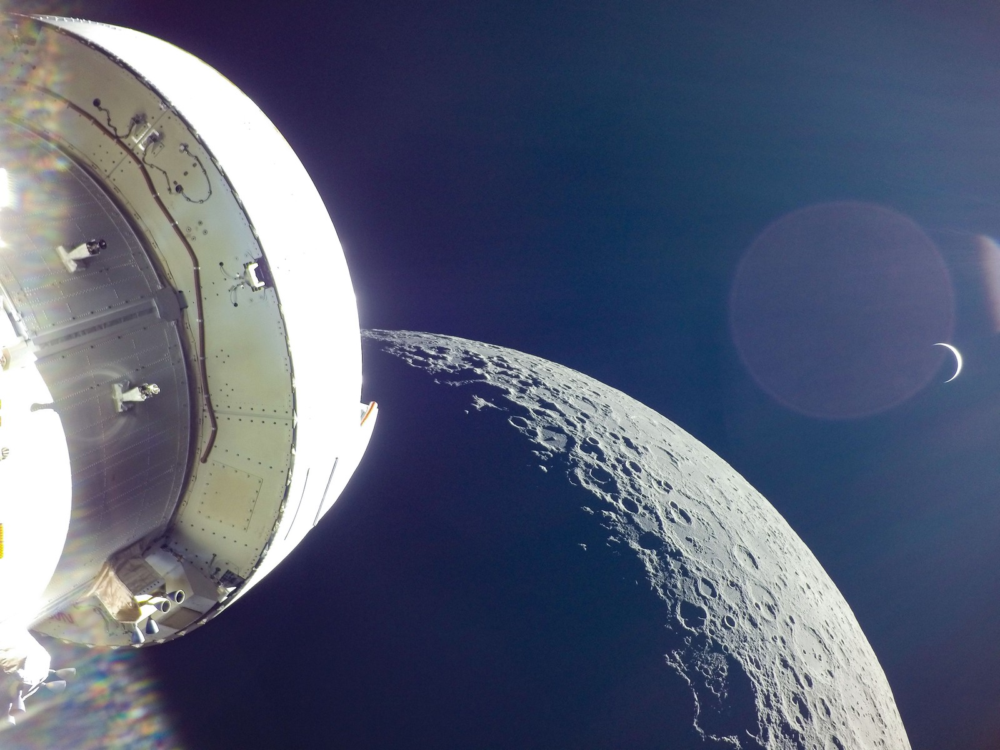
고도 384,400km, 달까지 항해해 지구에서는 볼 수 없는 달 뒷면을 통과하는 6일 일정입니다. 인류가 걸어온 길을 따라 되돌아옵니다.
85억 원 (1인 기준)
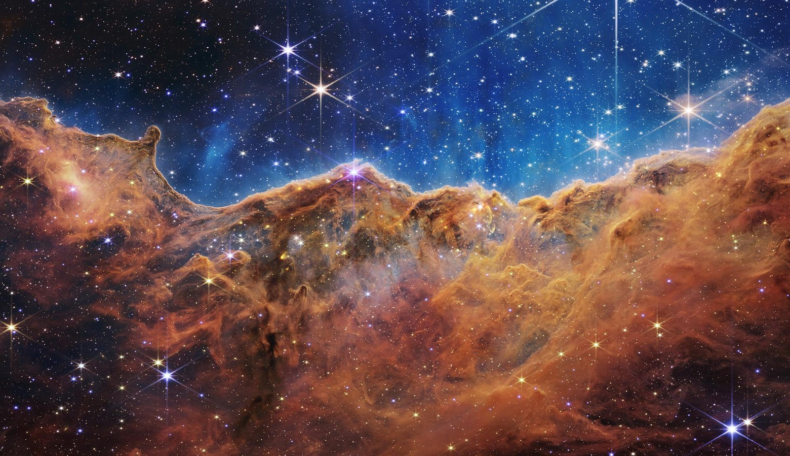
지구와 태양의 중력이 균형을 이루는 라그랑주점으로 이동해 대기의 방해 없이 성운과 심우주를 관측하는 전문 투어입니다.
120억 원 (1인 기준)
네 가지 상품의 주요 조건을 한눈에 비교해 보세요.
| 항목 | 카르만 라인 체험 | 궤도 호텔 3일 | 달 플라이바이 | 딥스페이스 관측 |
|---|---|---|---|---|
| 고도 | 100km | 400km | 384,400km | 라그랑주점 (약 150만km) |
| 총 소요 기간 | 훈련 포함 4일 | 훈련 포함 17일 | 훈련 포함 36일 | 훈련 포함 59일 |
| 사전 훈련 기간 | 3일 | 14일 | 30일 | 45일 |
| 정원 | 6명 | 6명 | 4명 | 4명 |
| 가격 | 1억 8천만 원 | 12억 원 | 85억 원 | 120억 원 |
신청부터 귀환까지, 모든 단계를 Kármán Line 전담팀이 함께합니다.
희망하는 상품과 일정을 상담하고 신청서를 제출합니다. 담당 매니저가 전 과정을 안내합니다.
우주 비행에 적합한지 확인하기 위해 지정 의료기관에서 정밀 검진을 받습니다.
중력 가속도 적응, 비상 탈출, 무중력 이동 훈련을 상품별로 3일에서 45일간 진행합니다.
최종 점검을 마친 뒤 발사장에서 탑승합니다. 이륙부터 궤도 진입까지 승무원이 함께합니다.
선택한 고도에서 무중력과 지구, 달, 심우주의 풍경을 직접 경험합니다.
안전하게 지구로 돌아온 뒤 회복 검진을 받고 비행 인증서를 수여받습니다.
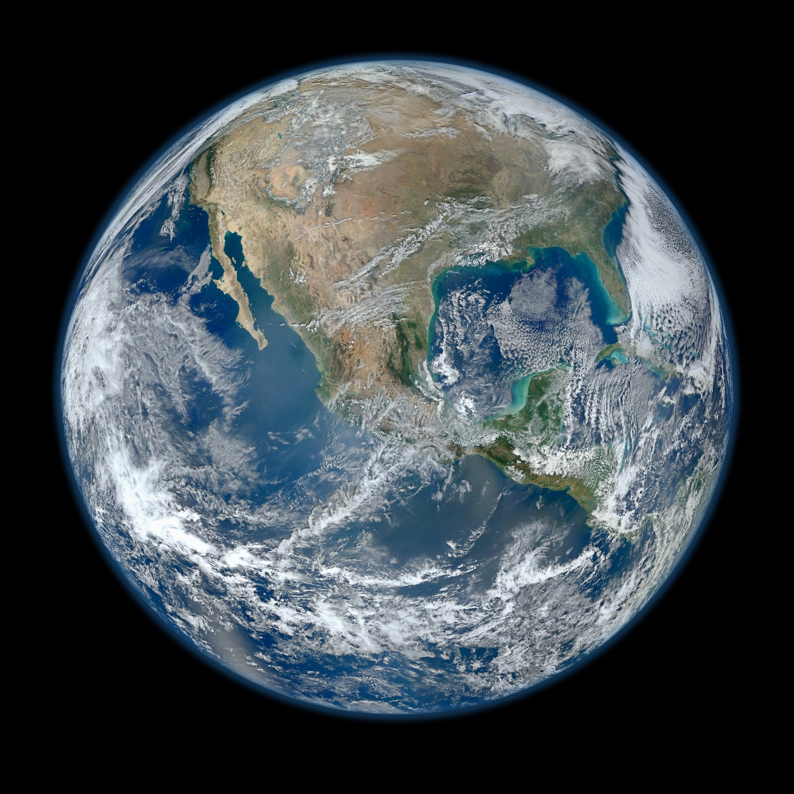
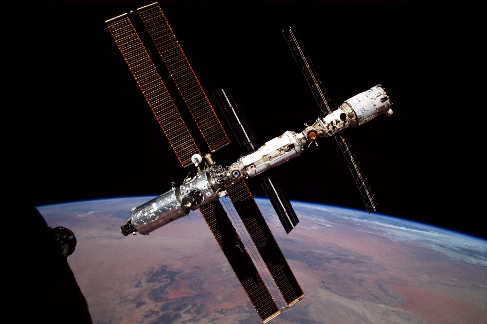
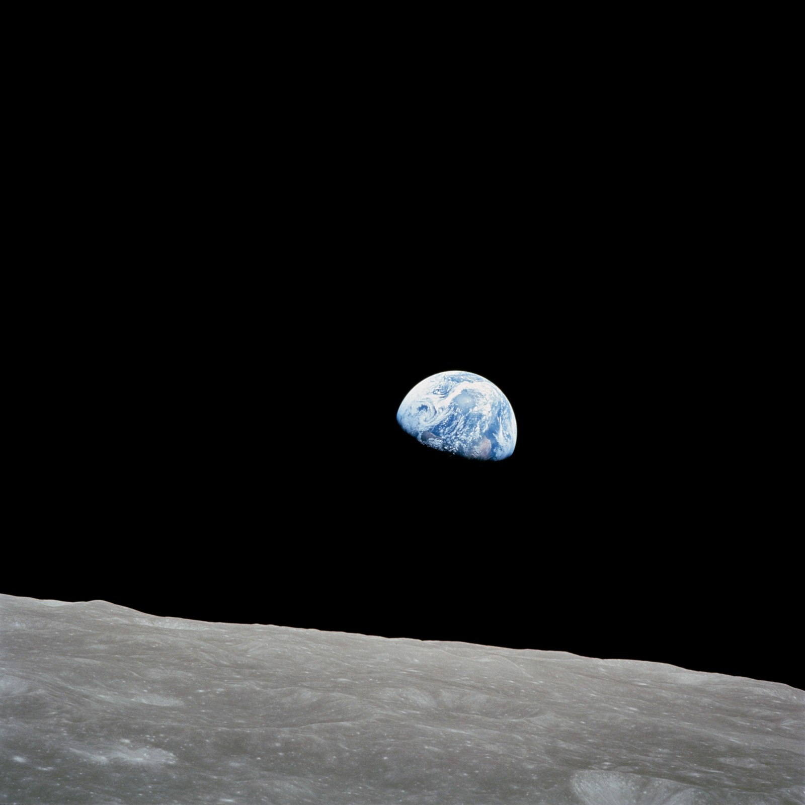
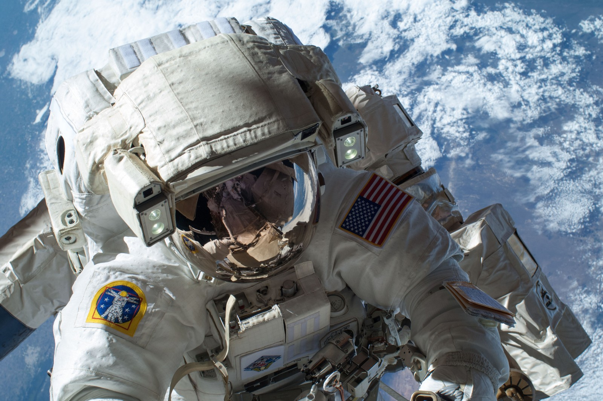
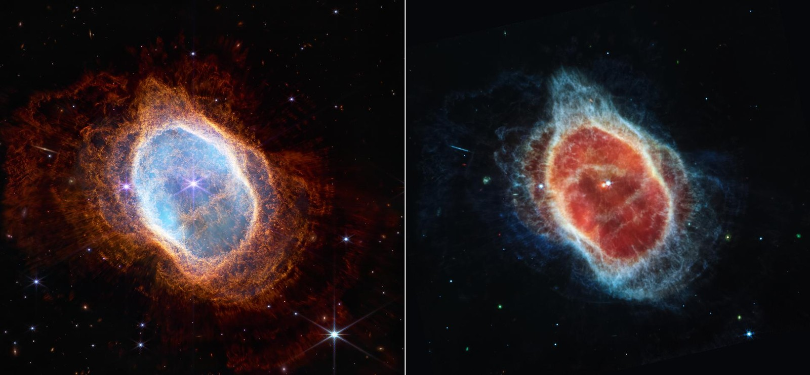
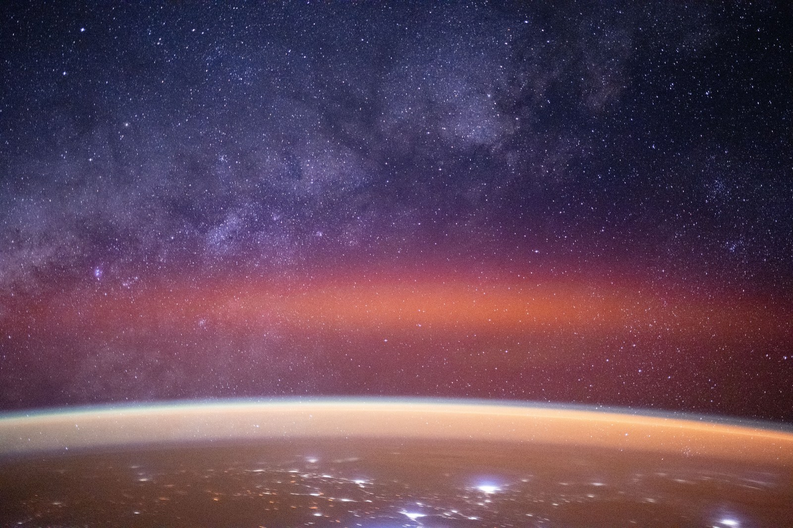
운동선수 수준의 체력은 필요하지 않습니다. 다만 심혈관, 평형 기능, 시력 등을 확인하는 신체검사를 통과해야 하며, 상품에 따라 기준이 다릅니다.
가속도 적응과 비상 절차 숙지가 중심이며, 하루 6~8시간 진행됩니다. 강도는 높지만 단계적으로 구성되어 있어 일반 성인이 충분히 따라올 수 있습니다.
출발 90일 전까지는 전액 환불되며, 이후에는 시점에 따라 30%에서 70%까지 위약금이 발생합니다. 기상 및 기체 사유로 인한 연기는 위약금 없이 일정을 변경할 수 있습니다.
가족이나 지인과 함께 신청할 수 있으며, 상품별 정원 안에서 같은 편으로 배정됩니다. 단, 탑승자는 모두 개별 신체검사와 훈련을 받아야 합니다.
설립 이후 87회의 비행을 무사고로 마쳤습니다. 모든 기체는 비행 전 3단계 점검을 거치며, 비상 상황에 대비한 탈출 시스템을 갖추고 있습니다.
아래 신청서를 작성해 주시면 담당 매니저가 영업일 기준 2일 이내에 연락드립니다.